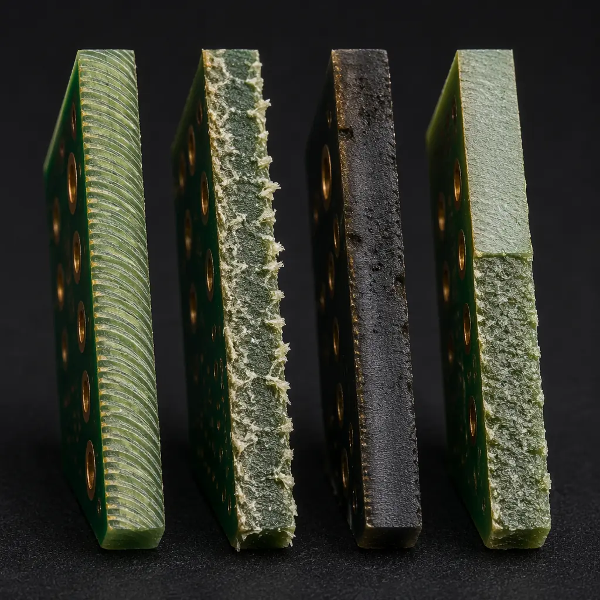
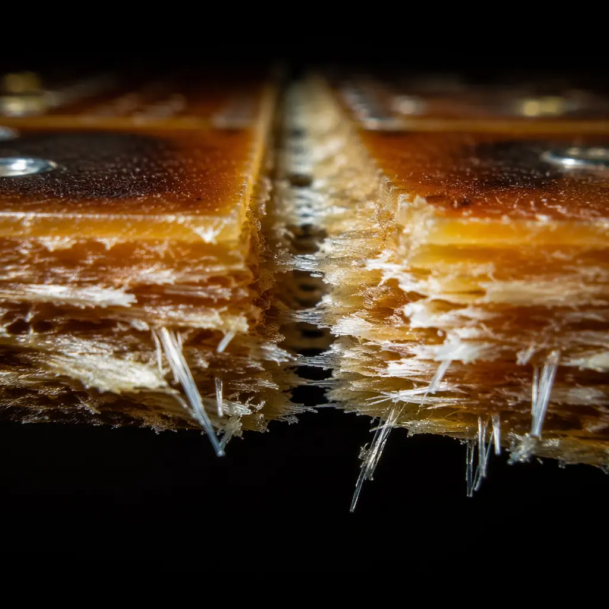
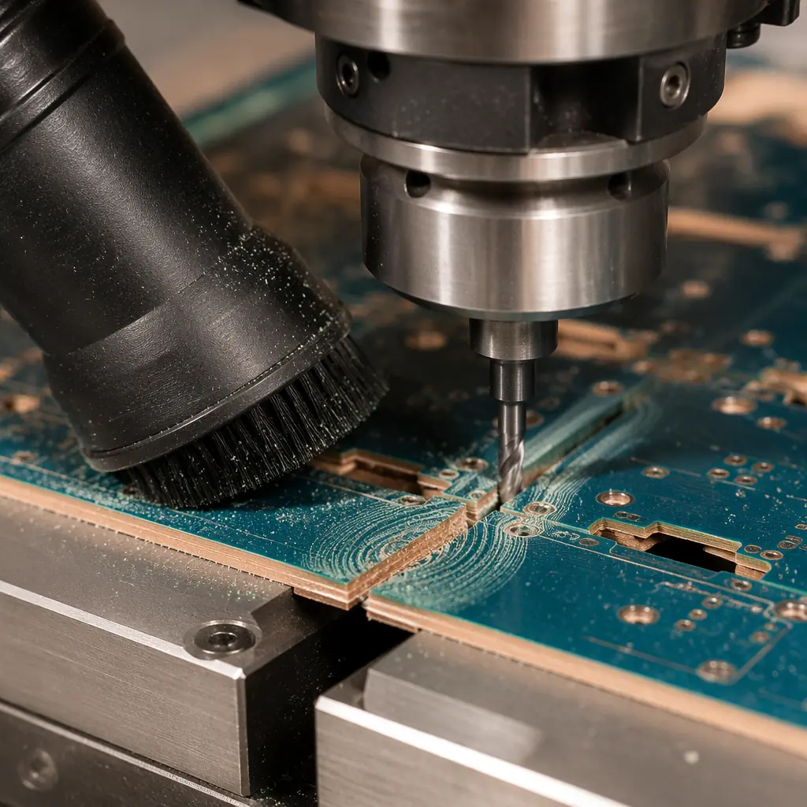

Depaneling — the process of separating individual PCBs from the manufacturing panel — is one of the last manufacturing steps and one of the most frequently overlooked in design reviews. Yet it has a direct impact on edge quality, component reliability, and per-unit cost. A poorly chosen depaneling method can crack ceramic capacitors, delaminate the board edge, or leave fiberglass splinters that cause assembly line stoppages. Choose correctly, and it becomes an invisible, trouble-free step in your production flow.
At Huaxing PCBA, we operate 4 depaneling technologies across our SMT lines, processing over 25,000 panels per month across prototype and volume production. This article draws on that production experience to compare the four mainstream depaneling methods: routing, V-scoring, laser cutting, and die punching — with specific data on edge quality, component stress, design constraints, and cost per panel.

Method 1: Router Depaneling — The Industry Standard
Router depaneling uses a high-speed spindle (typically 30,000–60,000 RPM) with a carbide router bit to mill through the tabs or bridges connecting individual PCBs to the panel frame. It's the most widely adopted method in the industry for good reason: it handles nearly any board shape, produces clean edges, and works across all PCB materials.
| Router Depaneling Specs | Typical Value |
|---|---|
| Spindle Speed | 30,000–60,000 RPM |
| Bit Diameter | 0.8–2.0 mm |
| Feed Rate | 10–30 mm/s |
| Edge Roughness (Ra) | 1.5–3.0 μm |
| Minimum Keep-Out Zone | 1.5 mm from component body |
| Dust Generation | Moderate — requires extraction |
| Tool Life per Bit | ~30,000 linear mm (FR-4) |
Edge Quality: The Cleanest of the Mechanical Methods
Router-cut edges show a characteristic spiral tool mark pattern with Ra values of 1.5–3.0 μm — clean enough that no secondary deburring is needed for most applications. The primary failure mode is fiber breakout on the bottom surface when the bit exits the laminate, which can be mitigated by using a backup board under the panel and maintaining sharp bits. For designs with controlled-impedance traces near the board edge, router vibration can cause microscopic delamination if the keep-out zone is too tight.
Stress on Components: Lower Than Punching, Higher Than Laser
The primary stress mechanism in router depaneling is vibration transmitted through the panel to soldered components. A 2019 Auburn University study measured peak acceleration of 15–25 G at component bodies 3 mm from the router path. MLCC capacitors are the most vulnerable — the vibration can induce micro-cracks in the ceramic dielectric that pass electrical test but fail after thermal cycling. The mitigation is straightforward: maintain a minimum 1.5 mm keep-out zone and avoid placing sensitive components near tab locations.
Design Constraints: Tab Placement Is Everything
Tabs (also called bridges) must be designed into the panel layout. Standard practice is 3–5 tabs per board side, each 2–3 mm wide, with 1.5 mm clearance to nearest component. Tabs are typically placed on straight edges — curved board outlines can be routed but require more complex programming and slower feed rates. For flex and rigid-flex PCBs, router depaneling is the only practical mechanical option.
When to Choose Router: Any board shape, any material, any volume. If you're not sure which method to use, router is the safest default. It's the only method that handles irregular board outlines and mixed materials without special tooling.
Method 2: V-Score Depaneling — Fastest for Rectangular Boards
V-scoring cuts a V-shaped groove approximately one-third of the board thickness from both top and bottom surfaces along straight lines. Individual boards are then separated by bending along the score line — either manually or with a V-score breaking machine (pizza-cutter style blade). V-scoring is by far the fastest depaneling method and the cheapest per panel, but its design constraints are severe.

| V-Score Depaneling Specs | Typical Value |
|---|---|
| Score Depth (per side) | 30–35% of board thickness |
| Remaining Web Thickness | 0.3–0.5 mm (for 1.6 mm board) |
| Score Angle | 30° or 45° |
| Edge Quality After Break | Rough — FR-4 fibers visible |
| Minimum Keep-Out Zone | 0.5 mm from score centerline |
| Processing Time per Panel | ~3–5 seconds (breaking only) |
| Tooling Cost | Included in PCB fab cost |
The Critical Limitation: Straight Lines Only
V-scoring works on straight lines across the entire panel — it cannot turn corners, create curves, or handle irregular board outlines. This means every board on a V-scored panel must be rectangular, and all boards in a row must share the same height. Non-rectangular boards or mixed-size layouts require router depaneling instead. This constraint alone eliminates V-scoring for roughly 60% of non-trivial PCB designs.
Component Stress: The Bending Problem
The separation process — bending the panel until the remaining web fractures — induces significant board flexure. Strain gauge measurements on 1.6 mm FR-4 panels show 1,500–3,000 με (microstrain) at the break line, dropping to 500–800 με at 10 mm distance. MLCC capacitors within 5 mm of the score line are at risk. The industry rule of thumb: no SMT components within 3 mm of the score centerline, and no tall components (electrolytic capacitors, connectors, transformers) within 8 mm. See our failure analysis guide for diagnosing score-line-related cracks.
Edge Quality: Functionally Acceptable, Cosmetically Rough
The fractured edge after V-score separation is rough — visible glass fiber strands protrude from the break surface. For most industrial and automotive applications, this is functionally acceptable. For consumer-facing products with exposed board edges, or for IPC Class 3 applications, the rough edge may be unacceptable. Some manufacturers follow V-score breaking with a light router pass to clean the edge, but this adds a second operation and negates the cost advantage.
Method 3: Laser Depaneling — Zero Mechanical Stress
Laser depaneling uses a UV (355 nm) or CO₂ laser to ablate the PCB material along the cut path. Because there's no physical contact between tool and board, component stress is effectively zero — making laser the preferred method for densely populated boards with sensitive components near the edge, and for ultra-thin substrates (≤0.4 mm) that can't survive mechanical depaneling forces.
| Laser Depaneling Specs | Typical Value |
|---|---|
| Laser Type | UV (355 nm) or CO₂ |
| Cut Width | 20–50 μm |
| Cut Speed (1.6 mm FR-4) | 5–15 mm/s |
| Edge Quality | Charred but smooth — no fibers |
| Heat-Affected Zone (HAZ) | 50–150 μm |
| Minimum Keep-Out Zone | 0.2 mm |
| Typical Equipment Cost | $150K–$400K |
Stress-Free Cutting: The Laser's Killer Advantage
Because the laser removes material through ablation rather than mechanical force, there is zero vibration or bending stress transmitted to components. This makes laser depaneling mandatory for designs where MLCC capacitors, bare-die chips, or MEMS sensors are within 1 mm of the board edge. A 2020 IPC white paper documented zero MLCC crack failures after laser depaneling across 10,000 test boards — compared to a 0.12% crack rate with router depaneling on the same design.
The Heat-Affected Zone: FR-4 Burns, Ceramic Substrates Excel
Laser ablation of FR-4 produces a charred edge — the epoxy resin carbonizes in a 50–150 μm zone along the cut. For most designs, this is functionally irrelevant: the carbonized layer is thin enough that it doesn't create a conductive path between layers. However, for high-voltage designs (>500V) or RF/microwave PCBs where edge carbonization could create a leakage path, UV laser with nitrogen assist gas (to suppress combustion) is preferred. Ceramic-substrate PCBs (alumina, aluminum nitride) handle laser depaneling beautifully with no charring.
Cost Reality: Capital-Intensive, Best for High-Value Boards
Laser depaneling equipment costs 5–10× more than a router system, and the per-panel operating cost is higher due to slower cut speeds on thick laminates. The economics make sense for high-value, high-density designs where the cost of a single field failure dwarfs the depaneling cost premium — think medical devices, aerospace modules, and telecom infrastructure cards. For low-cost consumer boards, router or V-score remains the practical choice.
Procurement Tip: Laser depaneling per-panel cost is typically $0.15–$0.35 depending on cut length and substrate thickness. For a $500 medical device PCB, that's noise. For a $3 consumer PCB, it's 10% of the board cost. Match the method to the product's value, not just its technical requirements.
Method 4: Die Punching — Ultra-High Volume, Ultra-High Tooling Cost
Die punching (also called die cutting or stamping) uses a hardened steel punch-and-die set to shear individual PCBs from the panel in a single press stroke. It's the fastest depaneling method by far — cycle times of 1–2 seconds per stroke — but the tooling cost and design constraints make it viable only for very high-volume production.
| Die Punching Specs | Typical Value |
|---|---|
| Cycle Time per Stroke | 1–2 seconds |
| Tooling Cost (punch + die) | $3,000–$15,000 |
| Tool Life | 100K–500K strokes |
| Minimum Board Thickness | 0.8 mm (1.6 mm optimal) |
| Edge Quality | Smooth shear zone + rough fracture zone |
| Component Stress | High — shock loading |
| Viable Volume | 50K+ units/year |
Speed: Unmatched at Scale
A single die press can depanel 1,800–3,600 panels per hour — roughly 10–20× the throughput of router depaneling. For automotive ECU boards or consumer power supplies running at 500K+ units annually, die punching is the only economically viable method. The trade-off is complete inflexibility: any change to the board outline requires a new punch-and-die set, costing $3K–$15K and 4–6 weeks lead time.
Edge Quality: The Shear-Fracture Profile
The punched edge shows two distinct zones: a smooth shear zone (top 30–40% of the thickness) where the punch cleanly cuts the laminate, and a rough fracture zone (bottom 60–70%) where the material tears. For panelization optimization, the shear zone can be maximized by maintaining sharp tooling and proper punch-to-die clearance (typically 5–8% of material thickness). Dull tooling increases the fracture zone ratio and can cause delamination.
Component Stress: The Shock Loading Problem
The instantaneous shear force creates a shock wave through the panel — peak acceleration measured at component locations can exceed 50 G. This makes die punching unsuitable for boards with ceramic chip components, crystal oscillators, or MEMS sensors near the board edge. Designs intended for die punching must reserve a generous keep-out zone (≥5 mm) and should avoid placing any mechanically sensitive components within 10 mm of the punch line.
Method Selection Matrix
| Factor | Router | V-Score | Laser | Punching |
|---|---|---|---|---|
| Board Shape | Any | Rectangular only | Any | Rectangular only |
| Edge Quality | Good (1.5–3 μm Ra) | Rough (fibers exposed) | Charred but smooth | Shear + fracture |
| Component Stress | Moderate (15–25 G) | Moderate (bending) | None | High (50+ G) |
| Min Keep-Out | 1.5 mm | 0.5 mm (score) / 5 mm (bend) | 0.2 mm | 5 mm |
| Tooling Cost | $0 (programming) | $0 (included in PCB) | $0 (programming) | $3K–$15K |
| Per-Panel Cost | $0.05–$0.15 | $0.01–$0.03 | $0.15–$0.35 | $0.005–$0.02 |
| Best Volume Range | 1–50K/year | 5K–500K/year | 100–20K/year | 50K+/year |
| Design Flexibility | Excellent | Poor | Excellent | None |

Summary: Match Method to Product Lifecycle
For prototype and low-to-medium volume production (up to ~50K units/year), router depaneling is the safest choice — it handles any board shape and produces clean edges with manageable component stress. For high-volume rectangular boards (consumer electronics, power supplies), V-scoring's speed and near-zero per-panel cost make it the clear winner, as long as the design respects keep-out zones. Laser depaneling earns its premium on high-value, high-density boards where component stress is unacceptable and the cost of a single field failure justifies the investment. Die punching is reserved for the highest volumes where tooling amortization makes the per-unit cost unbeatable.
At Huaxing PCBA, our panelization engineering team reviews depaneling strategy as part of every DFM analysis — we'll recommend the optimal method based on your board design, component placement, and production volume. Read our DFM guide for more design-for-manufacturing recommendations, or check our panelization cost optimization guide for panel utilization strategies.